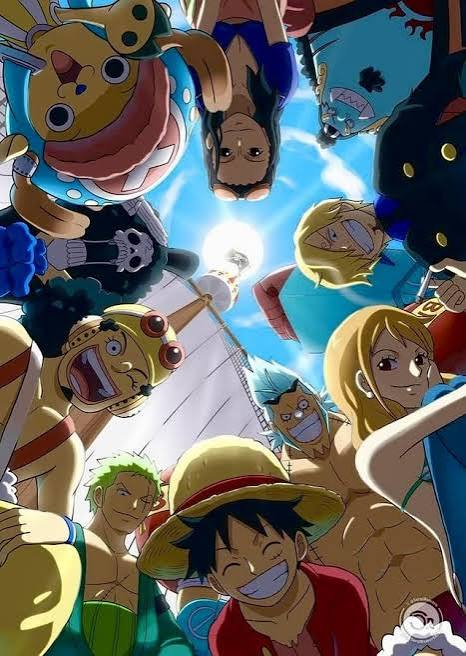

Tripulacion Mugiwuaras
La tripulación de los Mugiwara (Sombrero de Paja) está compuesta por 10 integrantes oficiales, liderados por Monkey D. Luffy. Originarios de distintos mares, cada uno se unió con un sueño único y un rol vital en el barco, el Thousand Sunny: • Luffy (Capitán): Busca convertirse en el Rey de los Piratas y encontrar el One Piece. • Zoro (Vicecapitán / Espadachín): El primero en unirse; domina el estilo de tres espadas y busca ser el mejor espadachín del mundo. • Nami (Navegante): La mente táctica que cartografía el océano; su meta es dibujar el mapa de todo el mundo. • Usopp (Tirador): El francotirador y creador de armas que sueña con convertirse en un valiente guerrero del mar. • Sanji (Cocinero): El caballero y estratega que pelea usando solo sus piernas; busca el legendario mar All Blue. • Chopper (Médico): Un reno con la fruta humana que funge como doctor y desea curar todas las enfermedades del planeta. • Robin (Arqueóloga): La única persona viva capaz de leer los Poneglyphs para descubrir la Verdadera Historia del Siglo Vacío. • Franky (Carpintero): El cíborg que construyó el barco de la tripulación y busca navegar con él hasta los confines del mundo. • Brook (Músico): Un esqueleto viviente que aporta alegría al barco; desea reencontrarse con la ballena Laboon tras dar la vuelta al mundo. • Jinbe (Timonel): El experto maestro del Gyojin Karate que estabiliza el barco y busca la igualdad entre humanos y hombres-pez.